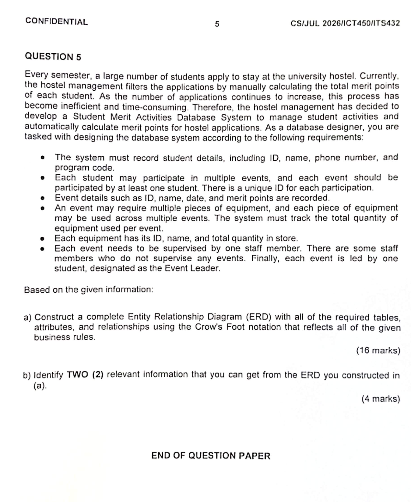

The noun has its own identifier and descriptive facts, so it becomes an entity.
1. NounsCandidate entities
2. DetailsAttributes and keys
3. VerbsRelationship names
4. QuantifiersMinimum and maximum
5. M:N rulesAssociative entities
Entity/table
Attribute
Relationship
Cardinality
Associative entity
Worked case: Student Merit Activities Database System. The final answer contains six tables and resolves two many-to-many relationships. Read each rule twice: once for structure and once for minimum/maximum participation.
Full business-rules question
July 2026 · Question 5 · 20 marks
Business rules with highlighted ERD clues
Every semester, a large number of students apply to stay at the university hostel. Currently, the hostel management filters the applications by manually calculating the total merit points of each student. As the number of applications continues to increase, this process has become inefficient and time-consuming. Therefore, the hostel management has decided to develop a Student Merit Activities Database System to manage student activities and automatically calculate merit points for hostel applications. As a database designer, you are tasked with designing the database system according to the following requirements:
- The system must record student details, including ID, name, phone number, and program code.Extract → STUDENT entity and four attributes.
- Each student may participate in multiple events, and each event should be participated by at least one student. There is a unique ID for each participation.Extract → M:N Student-Event rule, PARTICIPATION bridge, ParticipationID and both endpoint minima.
- Event details such as ID, name, date, and merit points are recorded.Extract → EVENT entity and four attributes.
- An event may require multiple pieces of equipment, and each piece of equipment may be used across multiple events. The system must track the total quantity of equipment used per event.Extract → M:N Event-Equipment rule, EVENT_EQUIPMENT bridge and QuantityUsed.
- Each equipment has its ID, name, and total quantity in store.Extract → EQUIPMENT entity and stock attributes.
- Each event needs to be supervised by one staff member. There are some staff members who do not supervise any events. Finally, each event is led by one student, designated as the Event Leader.Extract → Staff-Event and Student-Event Leader relationships, including mandatory Event endpoints and optional Staff/Student endpoints.
(a) Construct a complete Entity Relationship Diagram (ERD) with all of the required tables, attributes, and relationships using the Crow's Foot notation that reflects all of the given business rules. (16 marks)
(b) Identify TWO (2) relevant information that you can get from the ERD you constructed in (a). (4 marks)
Step 1 · Perform noun surgery
A noun is only a candidate entity. Ask whether the system needs several distinguishable instances and whether each instance needs its own facts.
The system stores many events and each event has its own details.
Equipment is not merely an Event attribute because the same equipment can be used by several events.
Staff must be identifiable even though the question does not list its attributes. StaffID and StaffName are necessary design additions.
Do not turn every noun into a table. “Hostel application” explains the business purpose, but the supplied rules do not provide application details or require an APPLICATION entity.
Diagram focus
Candidate entities onlyStep 2 · Attach attributes and keys
STUDENT
- PK StudentID
- Name
- PhoneNumber
- ProgramCode
EVENT
- PK EventID
- EventName
- EventDate
- MeritPoints
- FK1 StaffID
- FK2 LeaderStudentID
EQUIPMENT
- PK EquipmentID
- EquipmentName
- TotalQuantity
STAFF
- PK StaffID
- StaffName
Key test: a primary key identifies one occurrence of an entity. A foreign key appears only after a relationship has been analysed.
Diagram focus
Attributes and identifiersStep 3 · Resolve Student participation
STUDENT
|| for each participation row
|| for each participation row
RECORDS
PARTICIPATION
PARTICIPATION
PARTICIPATION
O< for one student
O< for one student
| Business-rule clue | Question to ask | ERD decision |
|---|---|---|
| Each student may participate in multiple events. | Minimum and maximum events for one student? | 0..many; “may” permits zero and “multiple” permits many. |
| Each event should be participated by at least one student. | Minimum and maximum students for one event? | 1..many. |
| There is a unique ID for each participation. | Does the relationship need its own record? | Create PARTICIPATION with ParticipationID, StudentID and EventID. |
PARTICIPATION
- PK ParticipationID
- FK1 StudentID
- FK2 EventID
Why the bridge? STUDENT and EVENT form an M:N relationship. PARTICIPATION converts it into two 1:M relationships and provides a home for the question's unique participation identifier.
Diagram focus
STUDENT–PARTICIPATION–EVENT onlyStep 4 · Resolve Event equipment
| Phrase | Meaning | Model |
|---|---|---|
| An event may require multiple pieces of equipment. | One event can use zero or many equipment types. | EVENT 0..M EQUIPMENT |
| Equipment may be used across multiple events. | One equipment item can appear in zero or many events. | EQUIPMENT 0..M EVENT |
| Track quantity used per event. | QuantityUsed depends on the event-equipment pairing, not on either entity alone. | Put QuantityUsed in EVENT_EQUIPMENT. |
EVENT_EQUIPMENT
- PK/FK1 EventID
- PK/FK2 EquipmentID
- QuantityUsed
Common error: TotalQuantity belongs to EQUIPMENT because it describes stock. QuantityUsed belongs to EVENT_EQUIPMENT because it describes the amount used by one event.
Diagram focus
EVENT–EVENT_EQUIPMENT–EQUIPMENT onlyStep 5 · Read supervision and leadership separately
Each EVENT has exactly one STAFF supervisor. A STAFF member may supervise zero or many events. Store StaffID as an EVENT foreign key.
Each EVENT has exactly one STUDENT leader. A STUDENT may lead zero or many events. Store LeaderStudentID as an EVENT foreign key.
Do not invent a constraint: the question does not state that the event leader must also appear in PARTICIPATION. That may be a sensible policy, but it is not part of the supplied business rules.
Diagram focus
Supervision and leadership onlyStep 6 · Translate words into Crow's Foot endpoints
| Wording | Minimum | Maximum | Endpoint |
|---|---|---|---|
| may / some do not | zero | from the remaining phrase | O |
| each / one / exactly one | one | one | || |
| at least one | one | many | |< |
| multiple / many / several | read “may” or “must” | many | < |
Read from both directions. “Each event has one supervisor” does not tell whether every staff member must supervise an event. The next sentence supplies that missing minimum: some staff supervise none.
Diagram focus
Minimum and maximum endpointsStep 7 · Assemble and inspect the complete ERD
Final relational structure
STUDENT (StudentID, Name, PhoneNumber, ProgramCode)
EVENT (EventID, EventName, EventDate, MeritPoints, StaffID*, LeaderStudentID*)
PARTICIPATION (ParticipationID, StudentID*, EventID*)
EQUIPMENT (EquipmentID, EquipmentName, TotalQuantity)
EVENT_EQUIPMENT (EventID*, EquipmentID*, QuantityUsed)
STAFF (StaffID, StaffName)
Six tables
Four main entities and two associative entities.
Four main entities and two associative entities.
Every table has a key
Including the composite key in EVENT_EQUIPMENT.
Including the composite key in EVENT_EQUIPMENT.
Both M:N rules are resolved
Student-Event and Event-Equipment.
Student-Event and Event-Equipment.
Every endpoint is justified
Optionality comes from words such as “may” and “some do not”.
Optionality comes from words such as “may” and “some do not”.
Diagram focus
Completed connected modelHow to write the examination answer
1. Draw all entities and write every required attribute.
2. Mark each primary key and foreign key clearly.
3. Name every relationship with a meaningful verb.
4. Show connectivity, minimum participation and maximum cardinality at both ends.
5. Re-read every business rule and confirm that the final diagram can store each stated fact.
Interactive recap · Assemble the model layer by layer
Use Steps 1–7 after completing the analysis above. Each relationship follows a horizontal or vertical route, and every cardinality symbol is attached directly to the entity it describes.
Student Merit Activities ERD
Step 1: locate the main entities|| exactly oneO< zero or many|< one or many
Read each endpoint beside its table. For example, O< beside EVENT and || beside STAFF mean that one staff member may supervise zero or many events, while every event has exactly one staff supervisor.